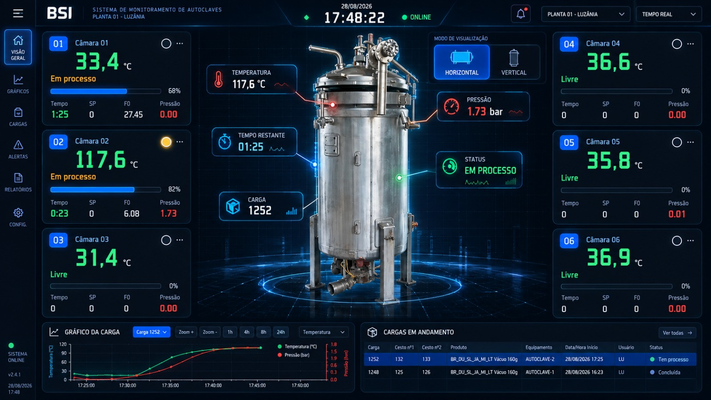
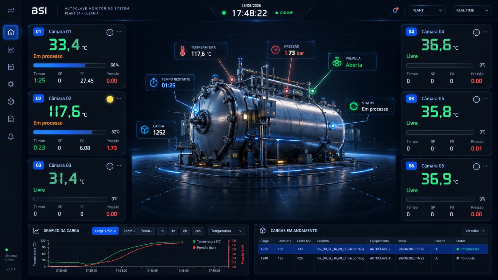
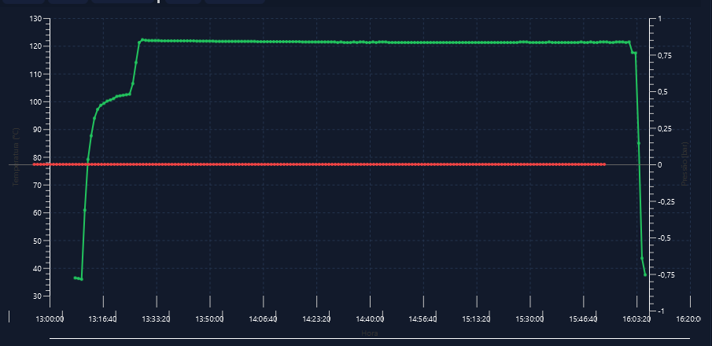

Processo
Supervisório que lê em tempo real os CLPs das autoclaves, exibe temperatura, pressão, setpoint e andamento de cada uma e grava as leituras no banco a cada minuto. Também controla a abertura, a alteração e o fechamento das cargas.
Como funciona
Monitoramento em tempo real
- Um cartão por autoclave com número, temperatura, setpoint, pressão, tempo de processo, F0 e luz de alarme
- Alarmes por cor: vermelha acima do processo mais a tolerância, azul ao atingir a temperatura de processo, amarela aquecendo acima de 45 °C
- Avisos como “Sensor PT100 com defeito” e “Abertura de carga se faz necessário”
- Leitura contínua dos CLPs via Modbus, com filtro para suavizar ruído
Gravação confiável
- Temperatura e pressão gravadas a cada minuto, apenas leituras válidas
- Se o banco de dados cair, as leituras são guardadas em disco e enviadas automaticamente quando a conexão voltar
- Indicador visual de conexão com o banco (“Banco OK” / “Banco OFF”)
- Estado ao vivo atualizado a cada 5 segundos para o aplicativo de tablet
Gestão de cargas
- Abrir — produto, cestos, operador e data/hora; envia o setpoint de pressão do produto ao CLP
- Alterar — edição dos dados da carga em processo
- Finalizar — bloqueado enquanto a temperatura estiver alta (45 °C ou mais); pede confirmação e login
- Gráficos da carga com zoom e relatório de acompanhamento de cargas
Recursos de acesso restrito
- Análise de dados — registros de temperatura e pressão de uma carga
- Ajustes — valor somado à leitura por autoclave, com efeito imediato
- Isolar escravos — retira um CLP em manutenção da varredura sem parar o programa
- Manutenção — ordens preventivas, corretivas ou urgentes por autoclave
Telas



Mais telas em preparação. As capturas de tela do Sistema serão publicadas aqui.